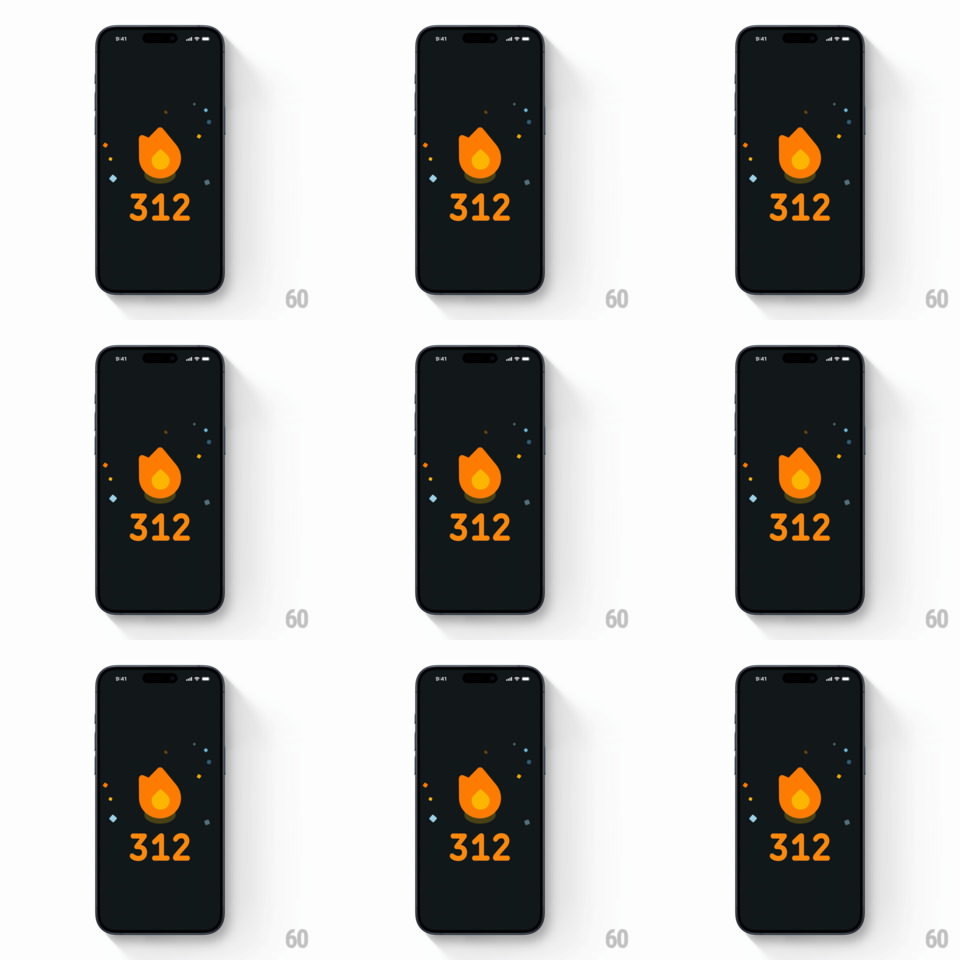

Media

Frame-by-frame

Rebuild this interaction 1:1: Duolingo's streak-unfreeze moment. A frozen streak flame is shattered by an explosive ice-particle burst, then the screen settles into a dark-themed streak summary: large orange flame icon above a bold orange streak count ("312"), with small colored confetti squares scattered around. Note: the source video for this shot is unavailable (Gumlet 403 on all renditions), so this spec is reconstructed from the official shot description and the poster frame - timing values are calibrated estimates, not measurements.

Rebuild this interaction 1:1: Duolingo's streak-unfreeze moment. A frozen streak flame is shattered by an explosive ice-particle burst, then the screen settles into a dark-themed streak summary: large orange flame icon above a bold orange streak count ("312"), with small colored confetti squares scattered around. Note: the source video for this shot is unavailable (Gumlet 403 on all renditions), so this spec is reconstructed from the official shot description and the poster frame - timing values are calibrated estimates, not measurements.
## Integration
Any view layer works: render the burst and confetti with your framework's particle or sprite system (or a Lottie/Rive asset), and drive the flame transition with a single timeline; keep the summary screen as ordinary declarative UI that the animation hands off to.
## Scene
- Full-screen dark surface (near-black blue-green, #0B1215 family) filling the device frame.
- Center stage, vertically stacked: streak flame icon (Duolingo orange #FF9600 with lighter #FFC800 inner flame) above the streak count in large bold rounded numerals, same orange.
- Around the flame: 8-12 small confetti squares (approx 14-20pt), scattered asymmetrically - light blue, orange, yellow - each at a random rotation.
- Start state: the flame is encased in ice (desaturated, blue-white frost shell, sharp crystalline shards around the silhouette).
## Motion spec
1. Ice burst (t=0): the frost shell fractures into 20-40 ice particles that explode outward from the flame's center, radial velocity high at center and falling off with distance; particles spin and fade out over ~500-700ms. (estimated)
2. Flame ignite (overlapping, starts ~100ms in): the flame crossfades from frozen desaturation to full orange with a quick scale punch (1.0 -> 1.15 -> 1.0, spring, ~300ms). (estimated)
3. Summary settle: streak count fades/slides up into place under the flame (~250ms, ease-out). (estimated)
4. Confetti: the colored squares pop in with individual stagger (30-50ms apart), slight overshoot scale, then hold static. (estimated)
- Total sequence ~1.2-1.5s, single play, no loop.
## Calibration
- Particles must read as ice: cool blue-white palette, angular shapes, fast initial burst with gravity pull-down after ~300ms.
- The emotional beat is the contrast: frozen/stuck -> violently freed -> warm flame. Keep the burst snappy; do not ease it gently.
- Count uses a heavy rounded geometric sans (Duolingo uses Feather Bold / custom rounded face).
## Reduced motion
Skip the particle burst and spring punches; crossfade frozen flame to warm flame over 200ms and fade in the count and confetti without motion.
## Don't miss
- The burst originates from the flame silhouette itself, not the screen center.
- Confetti squares are rotated at varied angles and sit at mixed distances from the flame - not a symmetric ring.
- Status bar and device chrome stay untouched; the animation is purely in-content.